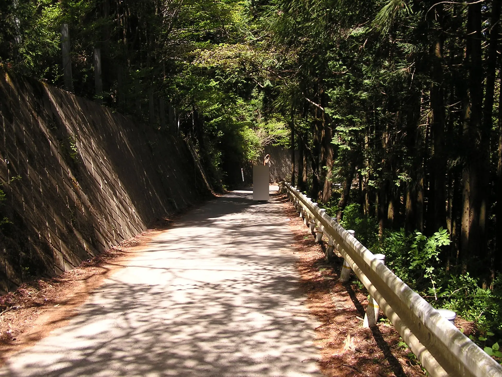
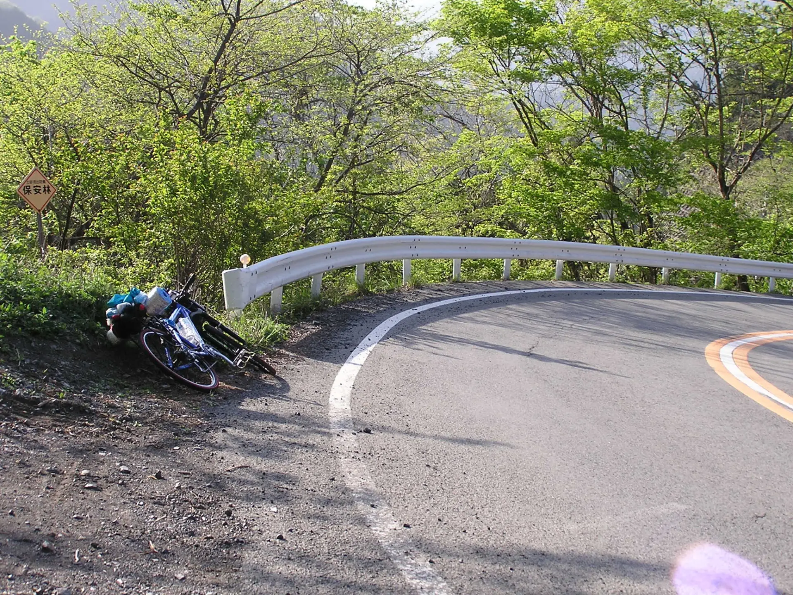
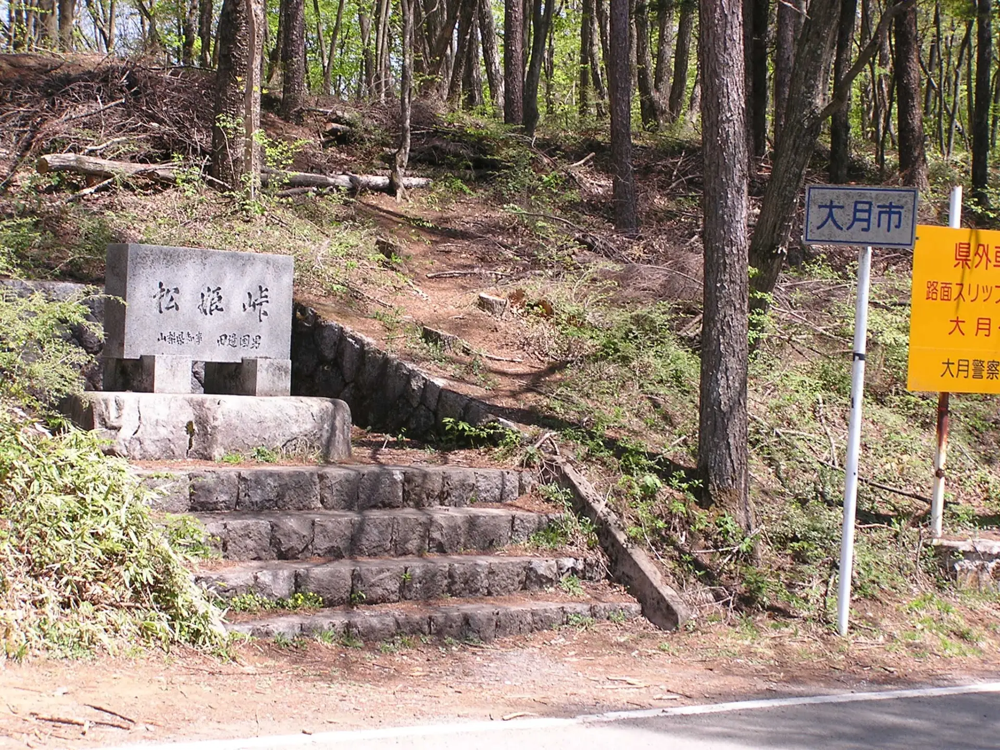
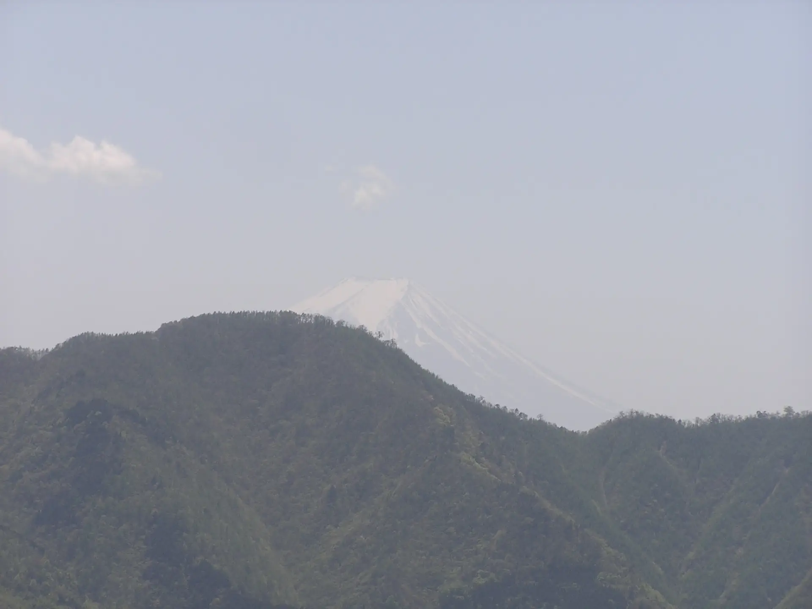
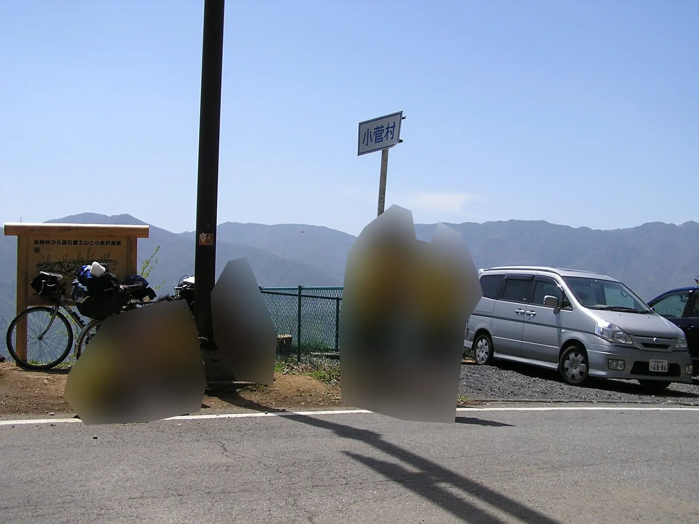
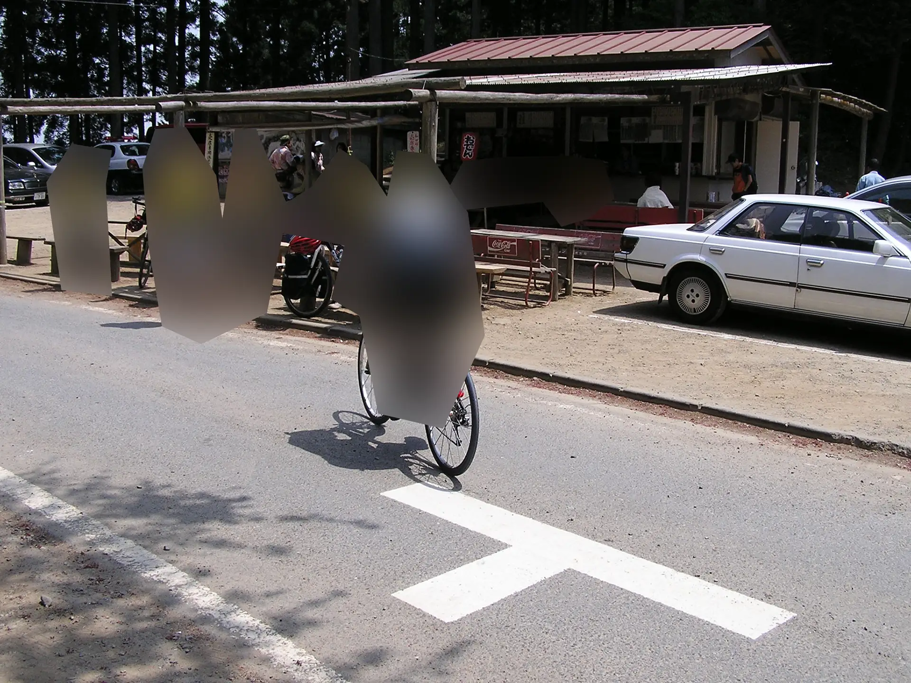
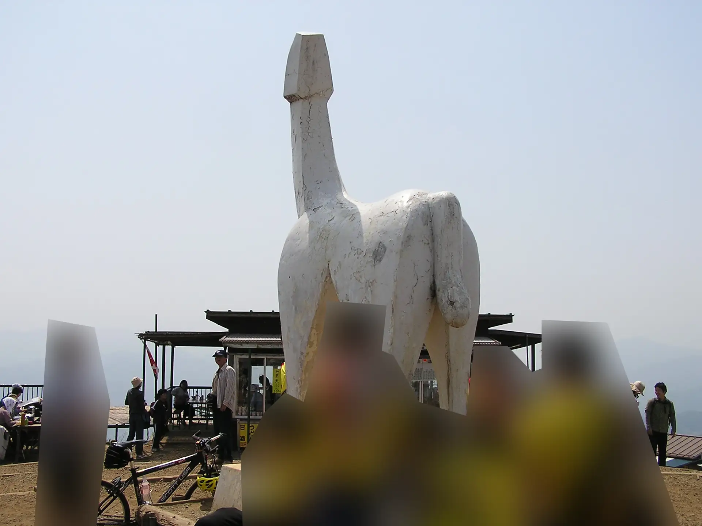

2005年5月3日～5日 大学新歓合宿 松姫峠ほか自転車ツーリング
大学のサイクリングクラブの新歓合宿で山梨県方面をツーリングしたときの写真だが、他の部員が写っている写真が多いので、あまり掲載できるものがない。
5月3日 大学～小菅村
大学サイクリングクラブの新歓合宿は、大学がある東京都内から自走ではじまるという伝統があった。ただしその後、普通に都内の集団走行は危ないので輪行で現地集合になったらしい。
まずは和田峠へ向かう。ド定番の峠だが、じつはこのときが初めてだった。写真は和田峠頂上からほかの部員を撮影したもの。部員にはぼかしをかけている。
和田峠を相模湖側へ下って、次は鶴峠へ。この画像はおそらく鶴峠あたりだと思う。
1日目は山梨県小菅村のキャンプ場に泊まった。
5月4日 小菅村～松姫峠（旧道）～キャンプ地不明
合宿2日目は松姫峠に向かう。
大学のサイクリングクラブには、定期的に峠の登りで競争をするイベントがあった。新歓合宿の2日目、松姫峠で競争が開催された。
自分は経験者ということもあって、この競争で1位になった。ただし、この1年生のときが一番速く、2年生以降は最高で2位にまでしかなることができなかった。
ともあれ、この頃完全に自分は天狗になっていた。
松姫峠は現在はトンネルが貫通しているようだが、当時は旧道が国道だった。
松姫峠からは富士山がよく見えた。
松姫峠にて。
この日は一度大月に下ったあと、中央線が通る谷筋より少し南にあるキャンプ場に泊まった記憶がある。どこに泊まったかは不明。
5月5日 再び和田峠へ
3日目、これは変則的なコースだが、今度は反対側から和田峠を登り返した。
そのあと、和田峠から陣馬山へ上った。陣馬山といえばこの彫刻だ。
このあと、高尾駅まで下って解散した。
2025年12月19日記事公開